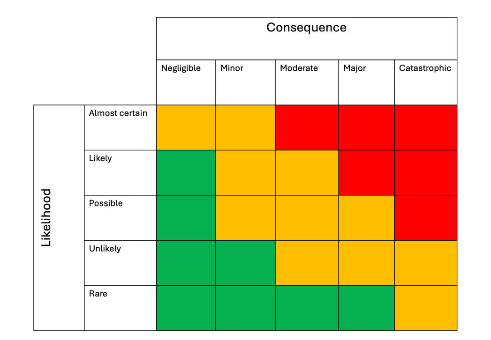

In brief
- A risk matrix can help structure a risk conversation, but it is not a precise measurement instrument.
- The score or colour band should be treated as decision support, not as the decision itself.
- Risk matrices are most fragile when they are used to make fine rankings, compare unlike consequences or allocate resources automatically.
- Good use depends on clear scales, visible uncertainty, explicit assumptions, current controls and a documented rationale for action.
- Severe, novel, contested or highly uncertain risks usually need analysis beyond the matrix.
Why this topic matters
Risk matrices are widely used. They appear in hospitals, process safety, enterprise risk management, project management, transport, aviation and many other organisational settings. Their popularity is understandable: they are simple, visual and easy to discuss in a meeting. A matrix gives people a shared language for asking whether something is likely, how serious it might be and whether action is needed.

The difficulty is that this simplicity can make the matrix look more authoritative than it really is. A coloured cell can feel like a fact, even when it is built from uncertain judgements, broad categories and local conventions. Once a risk is labelled “red”, “amber” or “green”, the discussion can quickly move from understanding the risk to defending the score.
My research on acute hospitals in England found that risk matrices were deeply embedded in formal risk assessment practice, but their design and supporting guidance varied considerably. This matters because small design choices, such as the wording of likelihood categories, the number of coloured bands or the meaning of a consequence score, can affect which risks receive attention, escalation and resources.
The core idea
A risk matrix places a risk scenario into a cell by combining two judgements: how likely the scenario is, or how often it might occur, and how severe its consequence could be. The cell then gives a score, colour band or action category. In principle, this can help people move from a vague concern to a more structured discussion.
But risk is not simply a cell in a grid. A useful assessment also needs to ask what is known, what is uncertain, which controls already exist, how reliable those controls are, who may be harmed, what assumptions are being made and what would make the situation worse or better. A matrix compresses these considerations into a simple display. That can be useful for communication, but it can also hide important reasoning.
A good way to think about a risk matrix is therefore this: it is a prompt for judgement, not a replacement for judgement. The matrix can help start the conversation. It should not be allowed to finish it.
What risk matrices can help with
Used carefully, a risk matrix can be helpful. It can support a first-pass review when a team needs to compare many reported risks. It can make assumptions visible by requiring people to state which likelihood and consequence categories they believe apply. It can also help communicate a risk portfolio to people who do not need the full technical detail of each scenario.
Swipe horizontally to view full table.
| Helpful use | What it can support |
|---|---|
| Structuring discussion | Encourages assessors to define the scenario, consequence and likelihood more explicitly. |
| Shared communication | Provides a common visual language across teams, professions and organisational levels. |
| Initial triage | Helps identify which issues may need closer review, escalation or additional evidence. |
| Documenting assumptions | Creates a simple record of how a risk was understood at a particular point in time. |
| Prompting control discussions | Can open a conversation about existing controls, residual risk and further action. |
These benefits are strongest when the matrix is used transparently and modestly. The most valuable part of the process is often not the final score, but the disciplined conversation that happens before the score is selected.
Where risk matrices can mislead
The limitations of risk matrices are not just matters of taste. They arise from the way matrices transform complex, uncertain information into a small number of categories. A broad category may contain many different real-world possibilities. Two risks with the same score may not deserve the same response. Two risks in different colours may be closer than the colours suggest.
One common problem is poor resolution. A 5 × 5 matrix appears to offer 25 combinations, but once cells are grouped into a few colour bands, many different risks become tied. A frequent minor harm and a rare catastrophic harm may end up with the same score, even though the ethical, operational and regulatory response may need to be very different.
Another problem is risk-ranking reversal. Depending on how the bands are drawn, a matrix can make a quantitatively larger risk appear less important than a quantitatively smaller one. This is especially concerning when the matrix is used to prioritise resources or to decide which risks receive management attention.
There is also a practical problem with the numbers themselves. In many organisations, labels such as “rare”, “possible”, “major” and “catastrophic” are assigned scores from 1 to 5 and then multiplied. These numbers are often ordinal labels, not true measurements. Multiplying them can create a sense of precision that the underlying judgement does not support.
Risk matrices can also struggle when one risk can produce several different consequences. A patient fall, for example, may result in no harm, minor injury or a severe fracture. A delayed treatment may create patient harm, complaints and reputational consequences at the same time. The assessor then has to decide whether to score the most likely outcome, the worst credible outcome, the highest score or some other representation. Each choice carries a different bias.
How to use a matrix carefully
Before relying on the score, ask
- What exact scenario is being assessed?
- Which consequence domain is being scored?
- Does likelihood mean probability for a one-off event, or frequency over time?
- What evidence supports the rating?
- What uncertainty remains?
- Which controls are already in place, and how reliable are they?
- What additional factors should influence prioritisation?
The scenario should be written clearly enough that another person can understand what is being rated. “Medication risk” is too broad. “Incorrect dose administered during handover because allergy information is not visible in the prescribing system” is more useful. A clearer scenario makes the consequence and likelihood discussion more meaningful.
The likelihood scale should fit the activity. Probability may be appropriate for a one-off project decision. Frequency is usually more meaningful for ongoing operations, where the question is how often the scenario might occur over a defined period. If the time frame is missing, likelihood categories become very difficult to interpret.
The consequence scale also needs care. A single matrix should not quietly merge incomparable outcomes such as financial loss, reputational damage, environmental harm and patient or worker injury unless the organisation has explicitly defined how those consequences are to be compared. In many cases, separate consequence domains or additional narrative explanation will be clearer.
The assessment should record the reasoning behind the score. This includes the evidence used, the assumptions made, the uncertainty in the judgement, the existing controls and the reason for any further action. A short explanation can prevent the score from becoming detached from the thinking that produced it.
When the matrix is not enough
A matrix is usually insufficient when the possible consequence is severe, the evidence is weak, the system is changing, the risk involves many interacting controls or the decision concerns substantial resource allocation. In these cases, the analysis may need to be supported by other methods.
For example, a bow-tie analysis may help show pathways from causes to consequences and the role of barriers. A systems-based method may be more appropriate when the concern involves control, feedback, coordination or organisational interactions. Quantitative or semi-quantitative analysis may be needed where sufficient data are available and decisions depend on more precise comparison. Multi-criteria decision analysis or portfolio thinking may be more appropriate when actions must be prioritised under constraints and several criteria matter.
The point is not that risk matrices should never be used. The point is that they should be used for the purpose they can reasonably serve: supporting a structured conversation and a transparent record of judgement. They should not be asked to do work that requires deeper analysis.
Limitations and cautions
Risk matrices are not neutral. The scales, categories, colours and action thresholds all embed assumptions about what matters. A matrix may express a stronger concern for rare catastrophic events, or it may treat high-frequency low-consequence events as equally important. Neither position is automatically right or wrong, but the choice should be deliberate rather than accidental.
Organisations should also be cautious about using one standard matrix for every context. A matrix designed for corporate reporting may not be suitable for clinical risk assessment, process safety, project delivery or day-to-day operational decisions. Standardisation can support consistency, but only when it is accompanied by clear guidance, training and review.
The safest practical stance is to use the matrix with humility: let it organise the conversation, but do not let it replace the conversation.
Related publication(s)
- Kaya, G.K., Ward, J., Pearman, A. and Clarkson, J. (2021). Evaluation of the formal risk assessment practice in hospitals in England. Journal of Risk Research. 24(6), 771–779. DOI: 10.1080/13669877.2020.1775682.
- Kaya, G.K. Good Risk Assessment Practice in Hospitals. (2018). PhD thesis, University of Cambridge. DOI: 10.17863/CAM.20813.
- Kaya, G.K., Ward, J.R. and Clarkson, P.J. (2019). A framework to support risk assessment in hospitals. International Journal for Quality in Health Care. 31(5):393-401. DOI: 10.1093/intqhc/mzy194.
- Kaya, G.K., Ward, J. and Clarkson, P.J. (2019). A review of risk matrices used in acute hospitals in England. Risk Analysis. 39(5):1060-1070. DOI: 10.1111/risa.13221.
Selected references
- Aven, T. and Zio, E. (2014). Foundational issues in risk assessment and risk management. Risk Analysis, 34(7), 1164–1172. DOI: 10.1111/risa.12132.
- Baybutt, P. (2016). Designing risk matrices to avoid risk ranking reversal errors. Process Safety Progress, 35(1), 41–46. DOI: 10.1002/prs.11768.
- Cox, L.A. (2008). What’s wrong with risk matrices? Risk Analysis, 28(2), 497–512. DOI: 10.1111/j.1539-6924.2008.01030.x.
- Cox, L.A. (2009). What’s wrong with hazard-ranking systems? An expository note. Risk Analysis, 29(7), 940–948. DOI: 10.1111/j.1539-6924.2009.01209.x.
- Duijm, N.J. (2015). Recommendations on the use and design of risk matrices. Safety Science, 76, 21–31. DOI: 10.1016/j.ssci.2015.02.014.